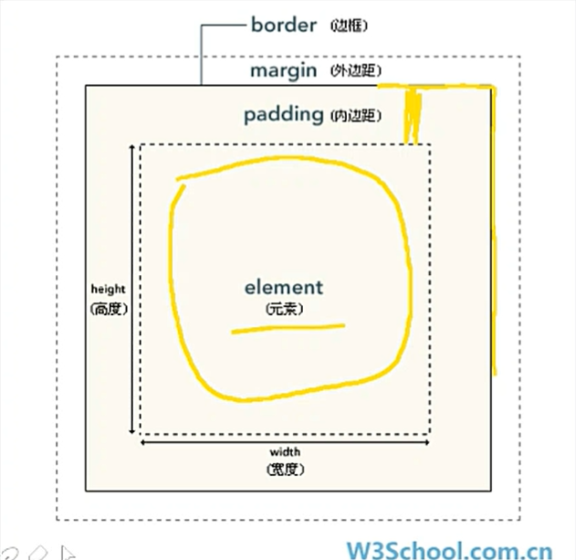

CSS盒模型
CSS盒模型对元素的影响
CSS盒模型（Box Model）规定了处理元素的内容、内边距padding、边框border和外边距margin的方式。

元素/盒子的结构组成
元素框的最内部分是实际的内容,直接包围内容的是内边距。内边距呈现了元素的背景。内边距的边缘是边距。边框以外是外边距,外边距默认是透明的,因此不会遮挡其它的任何元素。
内边距，边框和外边距都是可选的,默认值是0 ,但许多刘浏览器都会设置默认的外边距和内边距。可以通过将元素的margin和padding设置为零来覆盖这些浏览器样式。这可以分别进行,也可以使用通用选择器对所有元素进行设置。
盒模型的特点
内边距，边框和外边距可以应用于一个元素的所有边 ,也可以应用于单独的边。
外边距可以是负值,而且在很多情况下都要使用负值的外边距。内边距外边距可以是负值,而且在很多情况下都要使用负值的外边距。内边距不可以设置负值
一切皆为盒子, div，h1，或p元素常常被称为块级元素,意味着这些元素显示为块盒子。span和input等元素称为 “行内元素”， 这是因为他们的内容显示在行中,即“行内盒子”
块级元素与行内元素的区别
块级元素可设置宽高,行内元素宽高由元素内容决定
块级元素可设置垂直方向的内外边距,行内元素无法设置垂直的内外边距
块级元索默认显示方式占满整行,相邻的行内元素默认在同一行显示
通过display属性值进行元素显示方式的更改
盒子类型的相互转化
块级盒子独占一行不能和其他盒子放在一行；行内盒子不能设置width、height属性；行内块盒子既可以和其他盒子放在一起，又可以设置width、height
常用的display
块级盒子默认display : block;转换操作display : inline-block; display : inline ;
行内盒子默认display:inline;转换操作display:inline block; display:block;
行内块盒子默认display:inline block;转换操作display:inline; display:block;